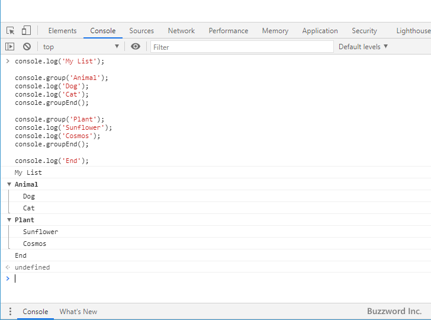
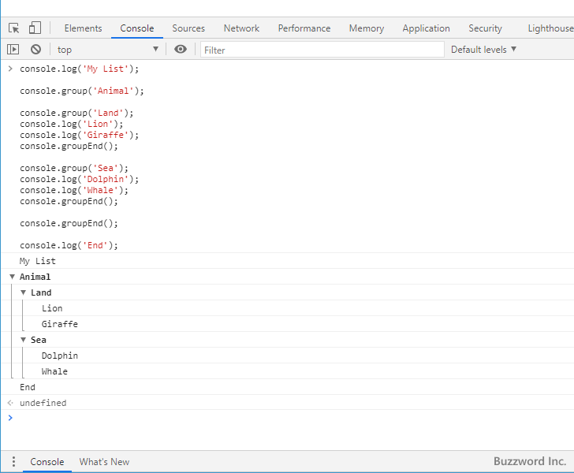
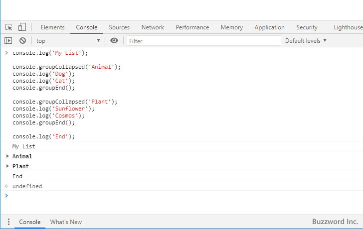
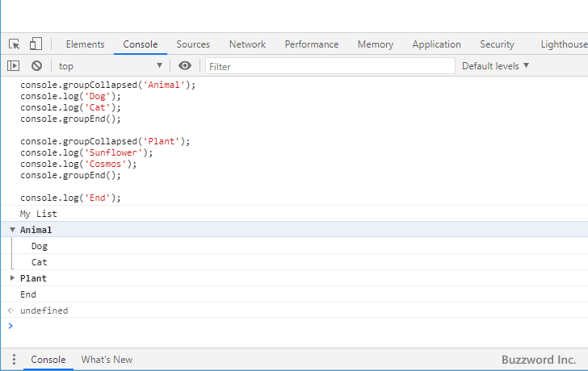
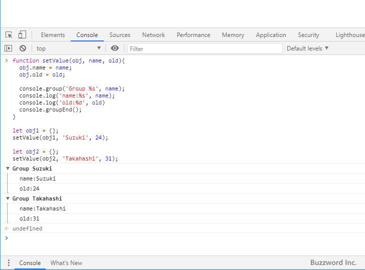

コンソールへの出力をグループ化する(console.group、console.groupEnd)
コンソールに対してログを出力する場合に console.group メソッドが呼び出されてから console.groupEnd メソッドが呼び出されるまでの間に console.log などのメソッドを使ってコンソールに対して出力されたログをグループ化し、インデントした状態で表示させることができます。ここでは console.group メソッドなどを使ってコンソールへの出力をグループ化する方法について解説します。
ログの出力をグループ化する
Console オブジェクトで用意されている console.group メソッドと console.groupEnd メソッドを使用することでログへの出力をグループ化することができます。それぞれの書式は次の通りです。
console.group([ラベル]) console.groupEnd()
console.group メソッドが呼び出されてから console.groupEnd メソッドが呼び出されるまでの間に console.log メソッドなどを使って出力されたログがグループ化されます。省略可能な引数のラベルを文字列で指定すると、グループの先頭でラベルを表示することができます。
次のサンプルをみてください。
console.log('My List');
console.group('Animal');
console.log('Dog');
console.log('Cat');
console.groupEnd();
console.group('Plant');
console.log('Sunflower');
console.log('Cosmos');
console.groupEnd();
console.log('End');
サンプルを実行すると次のようにコンソールに出力されます。

2 つのグループ化を行いました。グループ化されているログについてはインデントされて出力されています。
グループ化は入れ子にすることもできます。次のサンプルをみてください。
console.log('My List');
console.group('Animal');
console.group('Land');
console.log('Lion');
console.log('Giraffe');
console.groupEnd();
console.group('Sea');
console.log('Dolphin');
console.log('Whale');
console.groupEnd();
console.groupEnd();
console.log('End');
サンプルを実行すると次のようにコンソールに出力されます。

グループ化の中で入れ子にして 2 つのグループ化を行いました。入れ子にするたびにインデントが深くなって出力されます。
グループを折り畳んだ状態で表示する
console.group メソッドの代わりに console.groupCollapsed メソッドを使用するとグループ化されているログがデフォルトでは折り畳んだ状態で表示されます。書式は次の通りです。
console.groupCollapsed([ラベル]) console.groupEnd()
console.groupCollapsed メソッドが呼び出されてから console.groupEnd メソッドが呼び出されるまでの間に console.log メソッドなどを使って出力されたログがグループ化されます。省略可能な引数のラベルを文字列で指定すると、グループの先頭でラベルを表示することができます。
次のサンプルをみてください。
console.log('My List');
console.groupCollapsed('Animal');
console.log('Dog');
console.log('Cat');
console.groupEnd();
console.groupCollapsed('Plant');
console.log('Sunflower');
console.log('Cosmos');
console.groupEnd();
console.log('End');
サンプルを実行すると次のようにコンソールに出力されます。

2 つのグループ化を行いました。グループ化されているログについてはデフォルトでは折り畳んだ状態で表示されています。グループの中のログを展開して表示するには、グループに表示されている矢印をクリックしてください。

グループに含まれているログが展開されて表示されました。
ラベルに文字列の置換を利用する
console.group メソッドや console.groupCollapsed メソッドでは引数にラベルを指定することができますが、ラベルに指定する文字列では console.log メソッドの引数と同様に文字列の置換を使った書式が利用できます。
console.group(プレースメントを含む文字列 [, 置換するオブジェクト, ...])
詳しい使い方については「文字列の置換を利用したログの出力」をご参照ください。
次のサンプルをみてください。
function setValue(obj, name, old){
obj.name = name;
obj.old = old;
console.group('Group %s', name);
console.log('name:%s', name);
console.log('old:%d', old)
console.groupEnd();
}
let obj1 = {};
setValue(obj1, 'Suzuki', 24);
let obj2 = {};
setValue(obj2, 'Takahashi', 31);

グループ化のラベルに文字列の置換を使って変数の値を表示させることができました。
-- --
console.group メソッドなどを使ってコンソールへの出力をグループ化する方法について解説しました。
( Written by Tatsuo Ikura )

著者 / TATSUO IKURA
初心者～中級者の方を対象としたプログラミング方法や開発環境の構築の解説を行うサイトの運営を行っています。